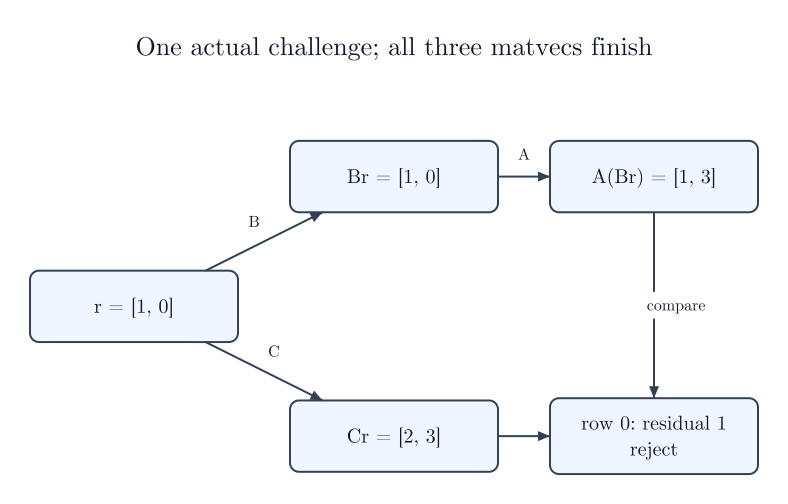
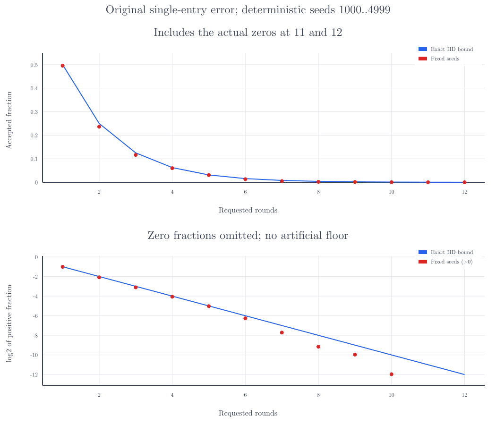
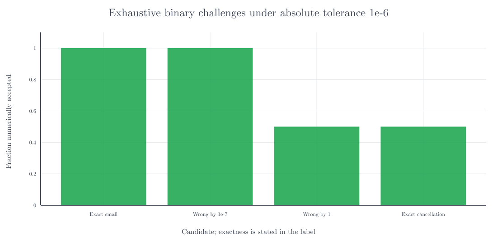
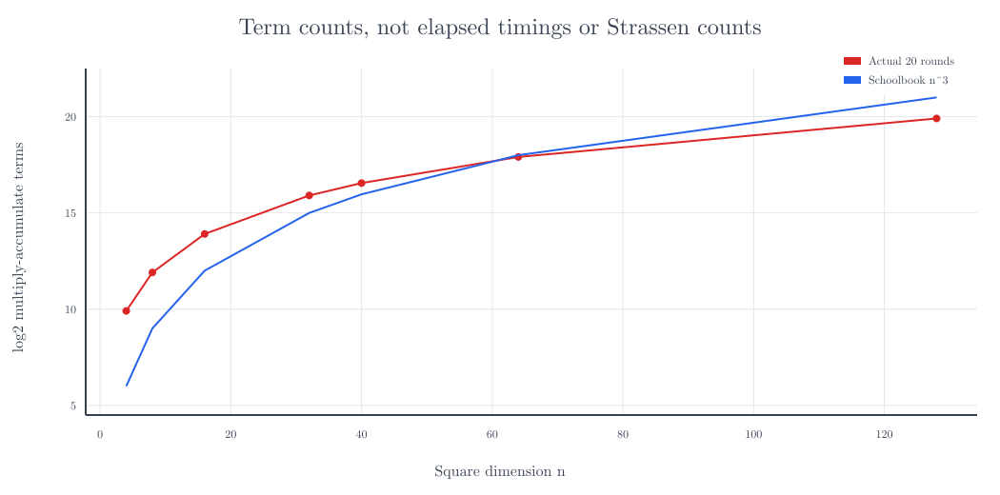
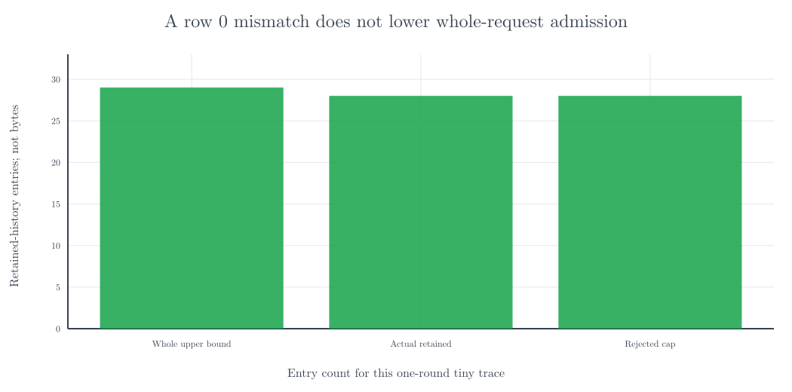

Freivalds verification: projections, exact guarantees and numerical limits
Abstract
Given A, B and a claimed product C, can we check the claim without computing a fresh dense matrix product? Freivalds compares A(Br) with Cr for binary challenge vectors r. A two-by-two example makes the projection and its blind spot visible. The original forty-by-forty integer experiment is preserved through a native once-per-seed sweep. The exact-arithmetic theorem, the library's absolute floating-point tolerance and deterministic pseudorandom experiments have different premises: this report derives the theorem and exhibits both a small wrong product that passes and an exactly correct product that rounding rejects. Actual operation counts and owned traces make those distinctions inspectable.
One binary challenge exposes a wrong entry
Let
For r=(1,0), Br=(1,0), A(Br)=(1,3), and Cr=(2,3). The first residual has magnitude one, so the native verifier rejects. The diagram below is populated from its actual supplied-challenge frame. Every round computes three products: Br, A(Br), and Cr.
#include <dm/dm.hpp>
namespace dm=datamunge;
int main(){
std::filesystem::create_directories("build");
const dm::algorithms::FreivaldsMatrix a{{1,2},{3,4}},b{{1,0},{0,1}},c{{2,2},{3,4}};
const auto t=dm::algorithms::freivalds_probe(a,b,c,{1,0});
const auto& f=t.frames.at(0);
std::print("Actual challenge {}; Br {}; A(Br) {}; Cr {}; tested absolute residuals {}; accepted {}.\n",f.rv,f.br,f.abr,f.cr,f.difference,t.accepted);
std::print("\n| supplied r | numerical verdict |\n| --- | --- |\n");
for(const auto& r:std::vector<std::vector<std::uint8_t>>{{0,0},{1,0},{0,1},{1,1}}){
const auto q=dm::algorithms::freivalds_probe(a,b,c,r);
std::print("| {} | {} |\n",r,q.accepted?"accept":"reject");
}
const auto audit=dm::algorithms::freivalds_binary_audit(a,b,c);
std::print("\nAll binary challenges: {}; accepted {}; rejected {}. Failed round {}; failed row {}; compared rows {}.\n",audit.vectors,audit.accepted,audit.rejected,t.failed_round,t.failed_row,t.work.compared_rows);
dm::graphics::Diagram d(65,1100);dm::graphics::DiagramNodeStyle node;
node.width=3.2;node.height=1.1;node.font_size=20;
d.node("r",{0,0},std::format("r = {}",f.rv),node)
.node("br",{4,2},std::format("Br = {}",f.br),node)
.node("abr",{8,2},std::format("A(Br) = {}",f.abr),node)
.node("cr",{4,-2},std::format("Cr = {}",f.cr),node)
.node("v",{8,-2},std::format("row {}: residual {}\nreject",t.failed_row,f.difference.at(0)),node);
d.edge("r","br","B").edge("br","abr","A").edge("r","cr","C")
.edge("abr","v","compare").edge("cr","v","");
d.text({4,4},"One actual challenge; all three matvecs finish",26).save_svg("build/freivalds_tiny.svg");
if(t.accepted||audit.accepted!=2||audit.rejected!=2)throw std::runtime_error("tiny exact control");
}Actual challenge [1, 0]; Br [1, 0]; A(Br) [1, 3]; Cr [2, 3]; tested absolute residuals [1]; accepted false.
| supplied r | numerical verdict |
|---|---|
| [0, 0] | accept |
| [1, 0] | reject |
| [0, 1] | accept |
| [1, 1] | reject |
All binary challenges: 4; accepted 2; rejected 2. Failed round 0; failed row 0; compared rows 1.

The exact-arithmetic argument
Write D=AB-C. In exact arithmetic a challenge passes precisely when Dr=0. If D=0, every challenge passes. Otherwise choose a nonzero row and one nonzero coefficient d_j in that row. Condition on all challenge bits except r_j. The row equation is then u+d_j r_j=0. Of the two choices r_j=0 and r_j=1, at most one can satisfy it. A uniformly independent binary vector therefore misses the error with probability at most one half. If K rounds use independent such vectors,
The tiny example attains one half in one round: it passes exactly when r_0=0. Several errors may cancel for some projections, but conditioning on a nonzero coefficient still gives the bound. An all-zero challenge always passes in exact arithmetic, so even this simplest blind spot is expected.
Freivalds' [1979 chapter, Fast probabilistic algorithms](https://link.springer.com/chapter/10.1007/3-540-09526-8_5) gives the projection argument in Section 3, printed pages 59–60 ([full proceedings copy, physical pages 68–69](https://raganwald.com/assets/fractran/Mathematical-Foundations-of-Computer-Science-1979-Proceedings-8th-Symposium-Olomouc-Czechoslovakia-September-3-7-1979.pdf#page=68)). Its two-point probes use signs; the conditional argument above is the binary variant implemented here. The theorem assumes exact arithmetic and independent random choices. A fixed deterministic SplitMix64 seed and a tolerance test do not establish those assumptions for arbitrary double matrices.
Preserve the original forty-by-forty experiment
The native fixture fills A and then B with integers from -9 to 9 using mt19937 seed 3. Its product reuses datamunge's existing Strassen multiplication. For these small integer bounds the product and projection sums are exactly representable, so this example avoids the numerical counterexamples in the next section. There is no natural external dataset for this arithmetic check; these are synthetic verification inputs.
The original report changes C_00 by one and tests seeds 1000 through 4999 at round counts 1 through 12. The native sweep executes each seed once at the longest requested prefix, stopping at its first failed round. A prefix of length K passes iff that first failure has zero-based index at least K, or no failure occurs. This reproduces each of the original 48,000 verdicts without replaying shorter prefixes. Fixed consecutive seeds give descriptive fractions; they are not an IID sampling design or confidence intervals.
#include <dm/dm.hpp>
namespace dm=datamunge;
int main(){
std::filesystem::create_directories("build");
const auto f=dm::algorithms::freivalds_example_matrices();
auto wrong=f.product;wrong[0][0]+=1;
const bool correct=dm::algorithms::freivalds_verify(f.a,f.b,f.product);
const bool corrupted=dm::algorithms::freivalds_verify(f.a,f.b,wrong);
const auto sweep=dm::algorithms::freivalds_seed_sweep(f.a,f.b,wrong,{1,2,3,4,5,6,7,8,9,10,11,12});
std::print("Original 40x40 default20: correct accepted {}; corrupted accepted {}.\n",correct,corrupted);
std::print("\n| rounds | accepted /4000 | fixed-seed fraction | ideal IID exact bound |\n| ---: | ---: | ---: | ---: |\n");
std::vector<double>x,y,ideal,lx,ly,li;
for(const auto& row:sweep.rows){
const double fraction=double(row.accepted)/double(row.trials),bound=std::ldexp(1.,-row.rounds);
std::print("| {} | {} | {:.5f} | {:.8f} |\n",row.rounds,row.accepted,fraction,bound);
x.push_back(row.rounds);y.push_back(fraction);ideal.push_back(bound);
li.push_back(std::log2(bound));
if(row.accepted){lx.push_back(row.rounds);ly.push_back(std::log2(fraction));}
}
const auto& w=sweep.work;
std::print("\nOnce per seed: {} kernel calls; {} actual rounds; {} RNG words; {} multiply-accumulate terms; {} compared rows.\n",w.kernel_calls,w.rounds_completed,w.random_words,w.br_terms+w.abr_terms+w.cr_terms,w.compared_rows);
auto linear=dm::graphics::RPlot::create();
linear.lines(x,ideal,"Exact IID bound",{37,99,235},2).points(x,y,"Fixed seeds",{220,38,38},4)
.legend({"Exact IID bound","Fixed seeds"},{{37,99,235},{220,38,38}})
.title("Includes the actual zeros at 11 and 12").xlab("Requested rounds").ylab("Accepted fraction").y_limits(0,.55);
auto log=dm::graphics::RPlot::create();
log.lines(x,li,"Exact IID bound",{37,99,235},2).points(lx,ly,"Fixed seeds (>0)",{220,38,38},4)
.legend({"Exact IID bound","Fixed seeds (>0)"},{{37,99,235},{220,38,38}})
.title("Zero fractions omitted; no artificial floor").xlab("Requested rounds").ylab("log2 of positive fraction");
dm::graphics::RLayout::create(2,1).add(linear).add(log).size(1050,900).title("Original single-entry error; deterministic seeds 1000..4999").fit_panels().save_svg("build/freivalds_original.svg");
if(!correct||corrupted||sweep.rows.at(0).accepted!=1982||sweep.rows.at(11).accepted!=0||w.rounds_completed!=7838)throw std::runtime_error("original seed experiment");
}Original 40x40 default20: correct accepted true; corrupted accepted false.
| rounds | accepted /4000 | fixed-seed fraction | ideal IID exact bound |
|---|---|---|---|
| 1 | 1982 | 0.49550 | 0.50000000 |
| 2 | 945 | 0.23625 | 0.25000000 |
| 3 | 465 | 0.11625 | 0.12500000 |
| 4 | 240 | 0.06000 | 0.06250000 |
| 5 | 123 | 0.03075 | 0.03125000 |
| 6 | 52 | 0.01300 | 0.01562500 |
| 7 | 19 | 0.00475 | 0.00781250 |
| 8 | 7 | 0.00175 | 0.00390625 |
| 9 | 4 | 0.00100 | 0.00195312 |
| 10 | 1 | 0.00025 | 0.00097656 |
| 11 | 0 | 0.00000 | 0.00048828 |
| 12 | 0 | 0.00000 | 0.00024414 |
Once per seed: 4000 kernel calls; 7838 actual rounds; 313520 RNG words; 37622400 multiply-accumulate terms; 157520 compared rows.

The counts are 1982,945,465,240,123,52,19,7,4,1,0,0. Zero observed accepts means only that these 4000 seeds found the discrepancy within that prefix. It does not imply zero error probability for a different sampling process.
The once-per-seed experiment performs 7838 rounds. The original independent reruns perform 86,667 rounds and 416,001,600 multiply-accumulate terms; the new sweep performs 37,622,400 such terms. These are executed kernel counts, excluding validation, allocation, RNG implementation details and formatting. They describe work avoided by prefix reuse, not a measured elapsed-time speedup.
Numerical acceptance has different semantics
The double API rejects when an actually compared absolute residual exceeds 1e-6. It retains that policy for compatibility. It does not compute an exact matrix product as a hidden precheck.
For A=B=[1] and C=[1+1e-7], both possible challenges pass the tolerance even though the product is wrong. Rounding can also cause the opposite outcome. Consider the exactly represented inputs
Their exact integer product really is C. But for r=(1,0), the ordered double sum for A(Br) loses the middle one and produces zero, while Cr is one. The supplied-vector trace rejects. Therefore acceptance is a numerical residual decision; rejection is also a numerical decision, with no general one-sided exact-equality guarantee. Exhaustive binary audits below count that same floating test and are not independent exact-arithmetic oracles.
#include <dm/dm.hpp>
namespace dm=datamunge;
int main(){
std::filesystem::create_directories("build");
const dm::algorithms::FreivaldsMatrix a{{1e16,1,-1e16}},b{{1,1},{1,0},{1,1}},c{{1,0}};
const auto rounded=dm::algorithms::freivalds_probe(a,b,c,{1,0});
std::print("Exact-product cancellation probe: A(Br) {}; Cr {}; absolute residual {}; accepted {}.\n",rounded.frames[0].abr,rounded.frames[0].cr,rounded.frames[0].difference,rounded.accepted);
const auto good=dm::algorithms::freivalds_binary_audit({{1}},{{1}},{{1}});
const auto tiny=dm::algorithms::freivalds_binary_audit({{1}},{{1}},{{1+1e-7}});
const auto large=dm::algorithms::freivalds_binary_audit({{1}},{{1}},{{2}});
const auto cancel=dm::algorithms::freivalds_binary_audit(a,b,c);
const std::array<dm::algorithms::FreivaldsBinaryAudit,4> audits{good,tiny,large,cancel};
const std::vector<std::string> names{"Exact small","Wrong by 1e-7","Wrong by 1","Exact cancellation"};
std::vector<double> fractions;
std::print("\n| case | vectors | accepted | rejected |\n| --- | ---: | ---: | ---: |\n");
for(std::size_t i=0;i<audits.size();++i){const auto& q=audits[i];std::print("| {} | {} | {} | {} |\n",names[i],q.vectors,q.accepted,q.rejected);fractions.push_back(double(q.accepted)/double(q.vectors));}
auto plot=dm::graphics::RPlot::barplot(fractions,names);
plot.title("Exhaustive binary challenges under absolute tolerance 1e-6").xlab("Candidate; exactness is stated in the label").ylab("Fraction numerically accepted").y_limits(0,1.1).size(1100,540).save_svg("build/freivalds_numerical.svg");
if(!tiny.accepted||cancel.accepted!=2||cancel.rejected!=2||rounded.accepted)throw std::runtime_error("numerical policy controls");
}Exact-product cancellation probe: A(Br) [0]; Cr [1]; absolute residual [1]; accepted false.
| case | vectors | accepted | rejected |
|---|---|---|---|
| Exact small | 2 | 2 | 0 |
| Wrong by 1e-7 | 2 | 2 | 0 |
| Wrong by 1 | 2 | 1 | 1 |
| Exact cancellation | 4 | 2 | 2 |

All entry values must now be finite. Every row of A, B and C is validated for rectangular shape before dimension compatibility, zero-round shortcuts or quotas; NaNs and infinities are rejected as invalid input. Actual nonfinite accumulators or compared residuals throw an overflow exception. The implementation evaluates only the requested projections, so a supplied zero challenge need not overflow merely because an unused dense AB entry would be too large. These checks do not remove finite rounding error or underflow.
Count three matvecs before claiming a saving
For A of shape m by k, B of shape k by n and C of shape m by n, each performed round uses
multiply-accumulate terms, plus challenge generation and row comparisons. For square inputs this is 3n² per round. K successful rounds cost3Kn² such terms; the schoolbook multiplication reference is n³. Fewer terms therefore requires 3K less than n. This comparison excludes validation, allocation and other costs; it is not an elapsed-time crossover or the operation count of Strassen.
At the original n=40 and default K=20, a correct candidate performs96,000 terms, which exceeds the 64,000 schoolbook reference. The original claim that verification necessarily costs a fraction of multiplication at that setting is unsupported. A wrong candidate may stop much earlier. Even a row-zero failure occurs only after all three matvecs for its round have been computed.
#include <dm/dm.hpp>
namespace dm=datamunge;
int main(){
std::filesystem::create_directories("build");
std::vector<double>x,actual,reference;
std::print("| n | performed rounds | actual verifier terms | schoolbook reference terms | verifier/reference |\n| ---: | ---: | ---: | ---: | ---: |\n");
for(const std::size_t n:std::array<std::size_t,7>{4,8,16,32,40,64,128}){
dm::algorithms::FreivaldsMatrix identity(n,std::vector<double>(n));for(std::size_t i=0;i<n;++i)identity[i][i]=1;
const auto q=dm::algorithms::freivalds_verify_work(identity,identity,identity,20);
const auto measured=q.work.br_terms+q.work.abr_terms+q.work.cr_terms;
const double schoolbook=double(n)*double(n)*double(n);
std::print("| {} | {} | {} | {:.0f} | {:.4f} |\n",n,q.work.rounds_completed,measured,schoolbook,double(measured)/schoolbook);
x.push_back(double(n));actual.push_back(std::log2(double(measured)));reference.push_back(std::log2(schoolbook));
if(measured!=60*n*n||!q.accepted)throw std::runtime_error("three matvec count");
}
auto plot=dm::graphics::RPlot::create();
plot.lines(x,actual,"Actual 20 rounds",{220,38,38},2).points(x,actual,"",{220,38,38},4)
.lines(x,reference,"Schoolbook n^3",{37,99,235},2)
.legend({"Actual 20 rounds","Schoolbook n^3"},{{220,38,38},{37,99,235}})
.title("Term counts, not elapsed timings or Strassen counts").xlab("Square dimension n").ylab("log2 multiply-accumulate terms").size(1050,520).save_svg("build/freivalds_work.svg");
}| n | performed rounds | actual verifier terms | schoolbook reference terms | verifier/reference |
|---|---|---|---|---|
| 4 | 20 | 960 | 64 | 15.0000 |
| 8 | 20 | 3840 | 512 | 7.5000 |
| 16 | 20 | 15360 | 4096 | 3.7500 |
| 32 | 20 | 61440 | 32768 | 1.8750 |
| 40 | 20 | 96000 | 64000 | 1.5000 |
| 64 | 20 | 245760 | 262144 | 0.9375 |
| 128 | 20 | 983040 | 2097152 | 0.4688 |

Owned evidence and whole-request admission
Ordinary verification retains no history. A trace owns the three input matrices and each actual round frame. The trace entry forecast is
for compatible dimensions; incompatible inputs have no round frames. Input entries count all rows and scalar cells in A, B and C. A frame costs one metadata record, n challenge entries, k entries in Br, and up to m entries each in A(Br), Cr and the tested residual vector. These are entries, not bytes or peak RAM. The default quota is one million entries; zero disables only that optional quota. Count and container bounds still apply. Admission checks the conservative whole requested history before input copies and RNG draws; it does not predict an early mismatch or truncate a trace.
The tiny supplied challenge has an upper bound of 29 entries but actually retains 28, because only its first residual is tested. A cap of 28 still rejects the request. The exact cap 29 admits it. Binary enumeration has a separate vector-count cap. Nonpositive rounds preserve legacy vacuous acceptance for compatible valid inputs, so they provide no verification evidence. Even three empty matrices perform the requested number of empty rounds with no random draws.
#include <dm/dm.hpp>
namespace dm=datamunge;
int main(){
std::filesystem::create_directories("build");
dm::algorithms::FreivaldsMatrix a{{1,2},{3,4}},b{{1,0},{0,1}},c{{2,2},{3,4}};
const auto forecast=dm::algorithms::freivalds_trace_entries(a,b,c,1);
bool denied=false;try{(void)dm::algorithms::freivalds_probe(a,b,c,{1,0},28);}catch(const std::length_error&){denied=true;}
const auto t=dm::algorithms::freivalds_probe(a,b,c,{1,0},29);
const auto& f=t.frames[0];
const auto retained=18+1+f.rv.size()+f.br.size()+f.abr.size()+f.cr.size()+f.difference.size();
a[0][0]=900;c.clear();const bool owned=t.a[0][0]==1&&t.c[0][0]==2;
const auto empty=dm::algorithms::freivalds_trace({}, {}, {});
const auto zero=dm::algorithms::freivalds_verify_work({{1}},{{1}},{{2}},0);
bool ragged=false,nan=false,overflow=false;
try{(void)dm::algorithms::freivalds_verify({{1,0},{0}},{{1,0},{0,1}},{{1,0},{0,1}},0);}catch(const std::invalid_argument&){ragged=true;}
try{(void)dm::algorithms::freivalds_verify({{NAN}},{{1}},{{1}},0);}catch(const std::invalid_argument&){nan=true;}
const double huge=std::numeric_limits<double>::max();
try{(void)dm::algorithms::freivalds_probe({{huge}},{{2}},{{0}},{1});}catch(const std::overflow_error&){overflow=true;}
const bool unused=dm::algorithms::freivalds_probe({{huge}},{{2}},{{0}},{0}).accepted;
std::print("Tiny admission: upper {}; actual retained {}; cap 28 rejected {}; cap 29 admitted true; owned after caller edit {}.\n",forecast,retained,denied,owned);
std::print("Empty default: accepted {}; actual frames {}; RNG words {}; forecast entries {}.\n",empty.accepted,empty.frames.size(),empty.work.random_words,dm::algorithms::freivalds_trace_entries({}, {}, {}));
std::print("Wrong scalar with zero rounds: accepted {}; performed rounds {}; RNG words {}.\n",zero.accepted,zero.work.rounds_completed,zero.work.random_words);
std::print("Domain checks: ragged rejected {}; NaN rejected {}; actual overflow rejected {}; unused large product with r0 accepted {}.\n",ragged,nan,overflow,unused);
auto plot=dm::graphics::RPlot::barplot({double(forecast),double(retained),28.},{"Whole upper bound","Actual retained","Rejected cap"});
plot.title("A row 0 mismatch does not lower whole-request admission").xlab("Entry count for this one-round tiny trace").ylab("Retained-history entries; not bytes").y_limits(0,33).size(1050,520).save_svg("build/freivalds_controls.svg");
if(!denied||!owned||!ragged||!nan||!overflow||!unused||forecast!=29||retained!=28)throw std::runtime_error("admission and validation");
}Tiny admission: upper 29; actual retained 28; cap 28 rejected true; cap 29 admitted true; owned after caller edit true. Empty default: accepted true; actual frames 20; RNG words 0; forecast entries 20. Wrong scalar with zero rounds: accepted true; performed rounds 0; RNG words 0. Domain checks: ragged rejected true; NaN rejected true; actual overflow rejected true; unused large product with r0 accepted true.

The seeded kernel, supplied probe, binary audit and seed sweep share the same projection implementation and actual work counters. Traces retain the values that were computed; no replay fills in untested residuals. Ordinary calls keep the legacy argument order, default twenty rounds and default seed, including deterministic challenge consumption and early exits.
An accepted product is evidence only under the chosen arithmetic, tolerance, challenge process and positive round count. For the bounded integer fixture, the exact projection interpretation is useful and fully checkable. For general double inputs, inspect scale and rounding behavior before interpreting that numerical verdict as a statement about exact equality.